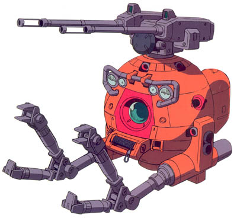

| Ball K Type |
|
|  | |
General and Technical Data |
|
|
Model number: RB-79 Unit type: combat space pod Armament: 2x 120mm cannon |
|
| Technical and Historical Notes | |
|
When the RB-79 Ball was created and fielded early in the OYW, a second model was concieved, the RB-79K. Originally intended as offensive units to fight Duchy mobile suits while Saberfish fighters engaged warships. the RB-79 and RB-79K were designed to work in tandem, the original model providing long range support and the K type providing short range fire. The only difference between the two were the armament, the RB-79 sporting a fixed 180mm cannon, and the K type sporting a turreted pair of 120mm's with a medium rate of fire.
However, the 120mm shells of the Ball K, as it was known, were insufficient at damaging most parts of a Zaku II C's thick armor at all but the shortest ranges, and much like the original Ball, their maneuverability was completely terrible. Following the Lourm campaign the Ball K was decomissioned, the remaining units refitted into the original variant which, while still having terrible maneuverability, had a cannon that could potentially down a mobile suit. Large numbers of Ball K's were sold to civilian colonies, the JDEG and the Riah Republic, who, in absence of their own mobile suit teams, could use the units for local defense. |
 RPG quick stats sheet
RPG quick stats sheet